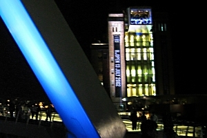

All about Newcastle
Below you will find an overview of the city of Newcastle and the surrounding area.
For further information about Newcastle visit the VisitNewcastleGateshead site or explore some of the links at the bottom of this page.
http://www.visitnewcastlegateshead.com/
Newcastle upon Tyne: the city
Newcastle upon Tyne is in the heart of the Geordie-speaking North East of England.
Despite its busy urban atmosphere, Newcastle is also a city of open spaces, with numerous parks; Exhibition park and Leazes park are adjacent to the University, and the Town Moor is a large moorland park where the Hoppings, Europe's largest travelling fair, takes place each June.
Newcastle is an historic city of impressive architectural grandeur. The Norman castle, after which the city was named, the medieval cathedral (St. Nicholas) with its lantern tower and other historic churches stand alongside the nineteenth-century elegance of Grey Street - described by John Betjeman as 'the most imposing facade in Western Europe'. The Quayside area by the River Tyne has been developed in recent years into a modern centre incorporating hotels, restaurants, leisure facilities, executive flats, the new law courts, and on the Gateshead side the splendid BALTIC centre for contemporary art. There are numerous bridges across the River Tyne, the best known being the Tyne Bridge which has not only become a symbol of the city but was also the prototype for the Sydney Harbour Bridge. The impressive new millenium bridge (shown above) is a must see!
Newcastle is the centre of one of the most naturally-beautiful and historically-rich parts of England. Northumbria is steeped in the history of violent clashes with invading Scots and marauding Vikings and, in addition to the relics of the Roman occupation almost 2,000 years ago, including Hadrian's Wall, there are many castles, some of which are still occupied. The most famous of these are Alnwick, Warkworth, Dunstanburgh and Bamburgh overlooking the rugged North Sea coast. The hills, moors and dales of the Northumberland National Park draw those who seek the beauty of peaceful, unspoilt countryside. Holy Island and the Farne Islands, famous for their beauty and wildlife, offer a popular day out.
Places of Interest
The following places are particularly popular with tourists, all accessible on local public transport. Newcastle is only 1hr20mins on the train to Edinburgh and 55 minutes to York, ideally located for day trips.
Within 30 minutes of Newcastle:
Durham Castle & Cathedral
The stately Castle of the bishops was founded by the Conqueror in 1072 and was originally a system of defensive earthworks of the 'motte-and-bailey' type. Eventually the Castle's military functions ceased and successive Prince Bishops resided there, restoring and modifying it into the impressive building it is today. Now, with the Cathedral, it is a World Heritage Site. The building of the Cathedral dates from the 11th century. It is considered by many to be the world's finest Norman cathedral. The whole church was designed to be vaulted, and the ribbed vault of the north choir-aisle (before 1096) is the oldest in England; the main choir vault was renewed early in the 13C. The Galilee was added as a Lady Chapel by Bishop Puiset (1153-95). Dr Johnson described the Cathedral as one of "rocky solidity and indeterminate duration". Visitors are also able to see the Bede Altar and the Shrine of St Cuthbert.
Hadrian's Wall
Built under the governorship of Aulus Platorius Nepos (ad 122-126) after the evacuation of Inchtuthil on the Tay and the abandonment of Scotland beyond the Tay, the Wall forms a zone of fortification extending across England for 73.5 miles. It was patrolled from so-called 'milecastles' (c. 1620 yds apart), between which were smaller turrets at every 540 yrds, and was garrisoned by infantry and cavalry in 17 large forts.
Tynemouth Priory & Castle
The prominent headland at the entrance to the Tyne estuary has for centuries been strategically important. The Priory was once one of the richest in all England, with a presbytery 22 metres high, whose soaring arches still impress. At the east end of the church is the Percy Chantry with its wonderful interlaced rib-vault design.
Beamish Museum
An open air museum, it vividly recreates life in the North of England in the early 1800s and 1900s. Costumed staff welcome visitors to the turn of the century Town with shops, houses, working pub, newspaper office, garage, sweetshop and sweets factory. Guided tours are given underground at a real "drift" mine in the Colliery Village and a row of pit cottages shows how the pitman and their families lived.
National Glass Centre, Sunderland
Sunderland is renowned as the birthplace of stained glassmaking in Britain. It was introduced in the 7th century by the Christian scholar Benedict Biscop, who brought craftsmen from France to create stained glass windows for St Peters Church, Monkwearmouth. The industry has been a part of Sunderland's heritage every since. You can see a range of exhibitions at the centre as well as demonstrations of hot glass blowing and stained glass making.
Restaurants, Pubs and Clubs
With many restaurants in the city, you can sample cuisine from around the world, as well as enjoying vegetarian food, traditional fare and local specialities. Happy Hours mean that you can often eat at half price. Traditional English pubs are still very much in evidence, particularly on the Quayside, and there are also many smart new wine bars and restaurants especially in the Jesmond area (metro stop 'Jesmond' or 'West Jesmond'). The city has numerous night clubs, one of which is located on the liner moored beneath the Tyne Bridge. A list of restaurants in Newcastle city centre will be available in the delegate pack.
Tourist Information
TOURIST INFORMATION CENTRE
Central Library
Newcastle upon Tyne, NE1.
Tel: 0191 261 0610 or 0191 261 0691
Outside Links
-
http://www.ncl.ac.uk/ is the Newcastle University homepage.
-
http://www.ncl.ac.uk/visitors/ and http://www.ncl.ac.uk/visitors/maps/campus/ contain visitor's information and maps about the University and the City.
-
http://www.visitnewcastlegateshead.com/ contains a great deal of information about Newcastle and Gateshead.
-
http://www.newcastle.gov.uk/ contains general information about the City.
-
http://www.ntb.org.uk/ contains tourist information about the Northumbria region.